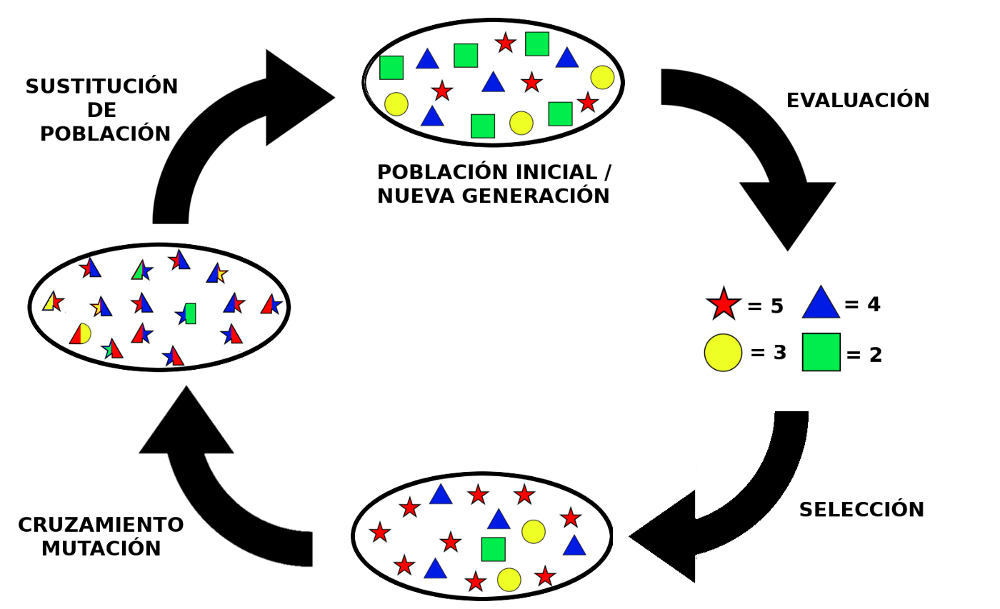

Algoritmos Genéticos
En 15 minutos

¿Qué son los Algoritmos Genéticos?
Son un tipo especial de algoritmos cuyo comportamiento está inspirado en la evolución biológica, son una de las ramas más prometedoras de la Inteligencia Artificial.
- Autor
- Gerardo Arceo
- Código de ejemplo
- Repositorio en Github
¿Para qué sirven?
Para encontrar soluciones a problemas en dónde las metodologías tradicionales se vuelven extremadamente complejas, desde resolver un sistema de múltiples ecuaciones hasta poder construir robots que se comporten cómo humanos
Ejemplo de uso
Supongamos que somos un grupo bioterrorista y queremos crear en nuestro laboratorio un nuevo virus lo más letal posible, sólo necesitamos definir su estructura de ADN, el problema radica en que no sabemos qué genes debe contener dicha cadena para que el virus sea tan letal cómo lo queremos
Solución inicial
Generamos aleatoriamente una cadena de ADN, las propiedades de nuestro virus estarán determinadas por los genes contenidos en dicha cadena, si nuestro virus no es lo suficientemente letal simplemente creamos uno nuevo, repetimos este proceso las veces que sean necesarias.
Problema inicial
Podríamos generar millones de virus aleatoriamente, pero hay tantas posibles combinaciones de genes, que la probabilidad de que un virus creado por casualidad sea tan letal cómo lo queremos, es extremadamente baja, es por esto que haremos uso de algoritmos genéticos para resolver el problema.
¿Por qué usar Algoritmos Genéticos (AG)?
Creación de un virus letal
El funcionamiento general de un AG es bastante intuitivo, simplemente estamos replicando el proceso natural de la evolución, partimos de una solución inicial y se podría decir que la "evolucionamos" hasta que se vuelve lo suficientemente buena, veamos a grandes rasgos cuáles son los pasos a seguir para la creación de nuestro virus:
- 1. Generamos aleatoriamente algunos virus, aunque todos parezcan muy ineficientes porque fueron producto del azar, hay algunos mejores que otros
- 2. Seleccionamos a los mejores virus según su letalidad y aunque sea cruel, nos deshacemos de los individuos más débiles
- 3. Para mantener constante el número de virus de cada población, repoblaremos con nuevos virus, pero esta vez en lugar de generarlos aleatoriamente, los generamos a partir de nuestra excelente selección de virus (puede ser por cruza, por mutación o por cualquier otro método biológico), así los mejores genes se van a heredar a la siguiente generación
- 4. Repetimos el proceso de selección y generación de virus varias veces, de esta forma en cada generación se van a ir mejorando los genes y por ende, la letalidad viral

¿Cómo se programa todo esto?
Entendiendo el funcionamiento general de los AG, es muy sencillo programarlos, por conveniencia trabajaremos con cadenas binarias (por ejemplo 101000101), de esta forma nuestro programa además de ser muy rápido, podrá generar fácilmente nuevos virus a partir de otros existentes
¿Cómo representamos una cadena de ADN con 1's y 0's?
Una cadena de ADN está compuesta por 4 bases nitrogenadas (Timina, Citosina, Adenina y Guanina), lo que determinará las propiedades de los virus es el orden y aparición de dichas bases.
Por ejemplo, la cadena de ADN "TCAGTCAGTCAGTCAG" podría representar a un virus extremadamente letal, mientras que la cadena "GCACACAGTTAGTGAC" representar a un virus muy poco letal, pero no lo sabremos hasta medir sus respectivas letalidades.
Para representar un virus en forma binaria, basta con asignarle un valor binario a cada una de las bases nitrogenadas, por ejemplo:
- Timina (T) = 00
- Citosina (C) = 01
- Adenina (A) = 10
- Guanina (G) = 11
De esta forma nuestra cadena de ADN "TCAGTCAGTCAGTCAG", tendría una representación binaria de "00011011000110110001101100011011", gracias a esta representación, basta con modificar uno de sus bits para crear un nuevo virus
¿Cómo generamos nuevos virus que hereden los mejores genes?
Supongamos que tenemos cierto virus cuya representación es "10010", sin nosotros saberlo, la letalidad de dicho virus radica en que su primer bit es "1", al ser nuestro mejor virus lo utilizaremos para generar nuevos virus que pasarán a la siguiente generación
Una de las formas en las que generamos un nuevo individuo a partir de otro existente, es a través de la mutación, consiste en cambiar el valor de uno de los bits de la cadena, así obtendremos un nuevo virus ligeramente distinto al original, puede que la mutación lo mejore o lo empeore, pero no lo sabremos hasta que midamos su letalidad, por ejemplo:
- Mutación del bit 1 = 00010 -> La mutación lo volvió ineficiente
- Mutación del bit 5 = 10011 -> La mutación lo volvió más eficiente
No tenemos que preocuparnos porque una mutación sea contraproducente, si este es el caso, el individuo simplemente se morirá en la siguiente generación por ser poco letal, pero tanto su padre cómo su hermano (al que si le benefició la mutación) podrán sobrevivir y tendrán la oportunidad seguir transmitiendo sus genes a futuras generaciones
Conclusión
Entre mayor sea el número de individuos por población y mayor sea el número de generaciones, mayor será la probabilidad de conseguir un virus realmente letal, con esto demostramos cómo los AG pueden utilizarse para resolver problemas complejos sin necesidad de entender completamente la propia naturaleza del propio problema (en este caso, no fue ni siquiera necesario entender por qué al modificar cierto gen, el virus se volvía más o menos letal), bastó con haber planteado un modelo en el cuál las soluciones se van mejorando iterativamente y de forma automatizada hasta alcanzar el resultado deseado.